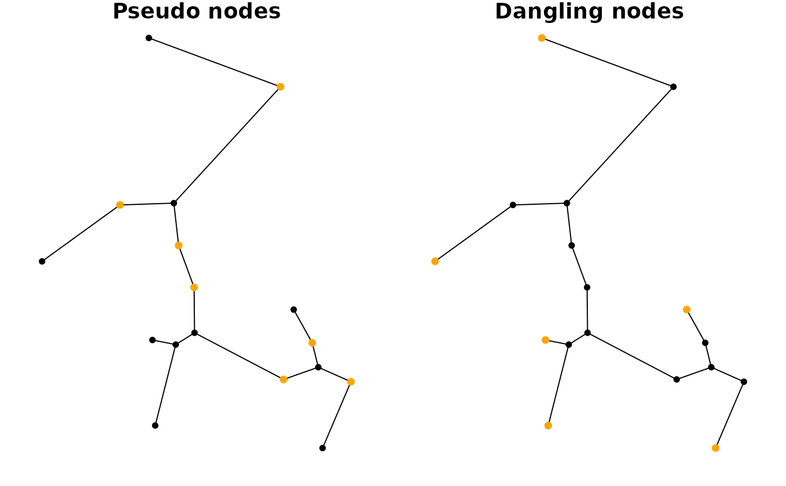

These functions are a collection of node type queries that are commonly
used in spatial network analysis, and form a spatial extension to
node type queries in tidygraph.
Value
A logical vector of the same length as the number of nodes in the network, indicating if each node is of the type in question.
Details
Just as with all query functions in tidygraph, these functions
are meant to be called inside tidygraph verbs such as
mutate or filter, where
the network that is currently being worked on is known and thus not needed
as an argument to the function. If you want to use an algorithm outside of
the tidygraph framework you can use with_graph to
set the context temporarily while the algorithm is being evaluated.
Functions
node_is_pseudo(): Pseudo nodes in directed networks are those nodes with only one incoming and one outgoing edge. In undirected networks pseudo nodes are those nodes with only two incident edges, i.e. nodes of degree 2.node_is_dangling(): Dangling nodes are nodes with only one incident edge, i.e. nodes of degree 1.
Examples
library(sf, quietly = TRUE)
library(tidygraph, quietly = TRUE)
# Create a network.
net = as_sfnetwork(mozart, "mst", directed = FALSE)
# Use query function in a filter call.
pseudos = net |>
activate(nodes) |>
filter(node_is_pseudo())
danglers = net |>
activate(nodes) |>
filter(node_is_dangling())
oldpar = par(no.readonly = TRUE)
par(mar = c(1,1,1,1), mfrow = c(1,2))
plot(net, main = "Pseudo nodes")
plot(st_geometry(pseudos), pch = 20, cex = 1.2, col = "orange", add = TRUE)
plot(net, main = "Dangling nodes")
plot(st_geometry(danglers), pch = 20, cex = 1.2, col = "orange", add = TRUE)

par(oldpar)
# Use query function in a mutate call.
net |>
activate(nodes) |>
mutate(pseudo = node_is_pseudo(), dangling = node_is_dangling())
#> # A sfnetwork: 17 nodes and 16 edges
#> #
#> # An unrooted tree with spatially explicit edges
#> #
#> # Dimension: XY
#> # Bounding box: xmin: 4548664 ymin: 2747309 xmax: 4549589 ymax: 2748537
#> # Projected CRS: ETRS89-extended / LAEA Europe
#> #
#> # Node data: 17 × 6 (active)
#> name type website geometry pseudo dangling
#> <chr> <chr> <chr> <POINT [m]> <lgl> <lgl>
#> 1 Mozartkino cinema https:… (4549504 2747309) FALSE TRUE
#> 2 Haus für Mozart theat… NA (4549003 2747376) FALSE TRUE
#> 3 Mozartsteg/Rudolfskai bus_s… NA (4549589 2747507) TRUE FALSE
#> 4 Mozart Denkmal artwo… NA (4549387 2747514) TRUE FALSE
#> 5 Mozartsteg/Rudolfskai bus_s… NA (4549491 2747551) FALSE FALSE
#> 6 Mozartsteg bridge NA (4549473 2747624) TRUE FALSE
#> # ℹ 11 more rows
#> #
#> # Edge data: 16 × 3
#> from to geometry
#> <int> <int> <LINESTRING [m]>
#> 1 1 3 (4549504 2747309, 4549589 2747507)
#> 2 2 7 (4549003 2747376, 4549064 2747619)
#> 3 3 5 (4549589 2747507, 4549491 2747551)
#> # ℹ 13 more rows
# Use query function directly.
danglers = with_graph(net, node_is_dangling())
head(danglers)
#> Mozartkino Haus für Mozart Mozartsteg/Rudolfskai
#> TRUE TRUE FALSE
#> Mozart Denkmal Mozartsteg/Rudolfskai Mozartsteg
#> FALSE FALSE FALSE